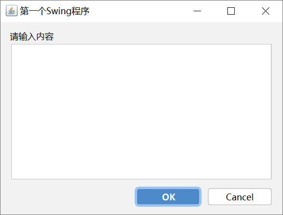

JAVA的GUI编程
GUI代表graphics user interface 一般翻译为图形用户接口或图形用户界面，这里讲的是桌面级应用编程。精挑细选之后，最终决定使用Swing来作为GUI编程的主力。
Swing简介
Swing 是一个用于 Java GUI 编程（图形界面设计）的工具包（类库）；换句话说，Java 可以用来开发带界面的 PC 软件，使用到的工具就是 Swing。
Swing 使用纯粹的 Java 代码来模拟各种控件（使用 Java 自带的作图函数绘制出各种控件），没有使用本地操作系统的内在方法，所以 Swing 是跨平台的。也正是因为 Swing 的这种特性，人们通常把 Swing 控件称为轻量级控件。
这套 Java Swing 教程从实用的角度出发，通过大量实例全面介绍 Java Swing 中的各种控件、布局、事件、窗口等。
Swing 和 AWT
AWT（Abstract Window Toolkit，抽象窗口工具）是一套早期的 Java GUI 开发工具，Swing 也是在 AWT 的基础上发展起来的。
AWT 的初衷是用来开发小型的图形界面程序，提供的功能较少，诸如剪切板、打印支持、键盘导航、弹出式菜单、滚动窗格等很多重要的功能在 AWT 中都不具备；此外，AWT 发生错误的几率也很高。
Java 官方看到了 AWT 的不足，就开始着手开发新的 GUI 类库，以继续占领 Java GUI 开发的市场，这就是后来的 Swing。
Swing 弥补了 AWT 的不足，并对 AWT 进行了扩充，几乎支持了所有的常用控件和功能，它们不但更加漂亮，而且更加易用，真正实现了“一次编译，到处运行”的承诺。
引入依赖
Swing为java自带库，不需要额外再引入依赖。
Intellij IDEA JFormDesigner 插件
玩过QT的都知道QT Designer有多方便，如果没玩过QT，也不知道QT Designer，可以说QT Designer 加快了编写QT的效率，组件拖动可以很快速搭建出一个窗口来。这里用Intellij IDEA安装Swing Designer 插件，用于设计swing窗口。
按路径打开Settings -> plugins，在Marketplace搜索JFormDesigner，下载安装即可
右键项目，以次找到New -> Swing UI Designer -> GUI Form，即可打开Swing Dersigner设计界面
JFormDesigner破解教程：JavaGUI 03 JFormDesigner 破解 - MuQuanyu的博客 - 博客园 (cnblogs.com)
JFormDesigner使用教程：Java GUI 桌面应用开发 - 知乎 (zhihu.com)
第一个GUI程序
新建项目，并在pom.xml中引入
<dependency>
<groupId>com.jgoodies</groupId>
<artifactId>jgoodies-forms</artifactId>
<version>1.9.0</version>
</dependency>右键，新建JFormDesigner Form
输入Frame的名字，点击ok
分别拖动JTextArea、JLabel，将窗口设计成这样：
点击this，设置Properties和Size Policy如下：
右键Ok按钮，点击Add Events Handler新建ActionListener
ActionListener的方法命名默认即可
点击ok后，进入到代码页面，在// TODO add your code here下添加如下代码：
JOptionPane.showMessageDialog(null,"helloworld"); // 弹框随后在构造方法中加上代码：
setVisible(true);
// Windows 风格
String lookAndFeel = "com.sun.java.swing.plaf.windows.WindowsLookAndFeel";
try {
UIManager.setLookAndFeel(lookAndFeel);
} catch (Exception e) {
throw new RuntimeException(e);
}并写main方法
public static void main(String[] args) {
new FirstFrame();
}启动项目，可看到运行成功
点击ok，出现弹窗，点击确定退出
swing同样支持第三方主题，这里推荐FlatLaf，首先在依赖引入FlatLaf
<dependency>
<groupId>com.formdev</groupId>
<artifactId>flatlaf</artifactId>
<version>0.26</version>
</dependency>FlatLaf支持4种主题,包括Flat Light,Flat Dark,Flat IntelliJ,Flat Darcula，这里使用作为例子Flat IntelliJ
try {
UIManager.setLookAndFeel(new FlatIntelliJLaf());
} catch (Exception e) {
throw new RuntimeException(e);
}点击启动，可发现主题已经更换成功

本博客所有文章除特别声明外，均采用 CC BY-SA 4.0 协议 ，转载请注明出处！